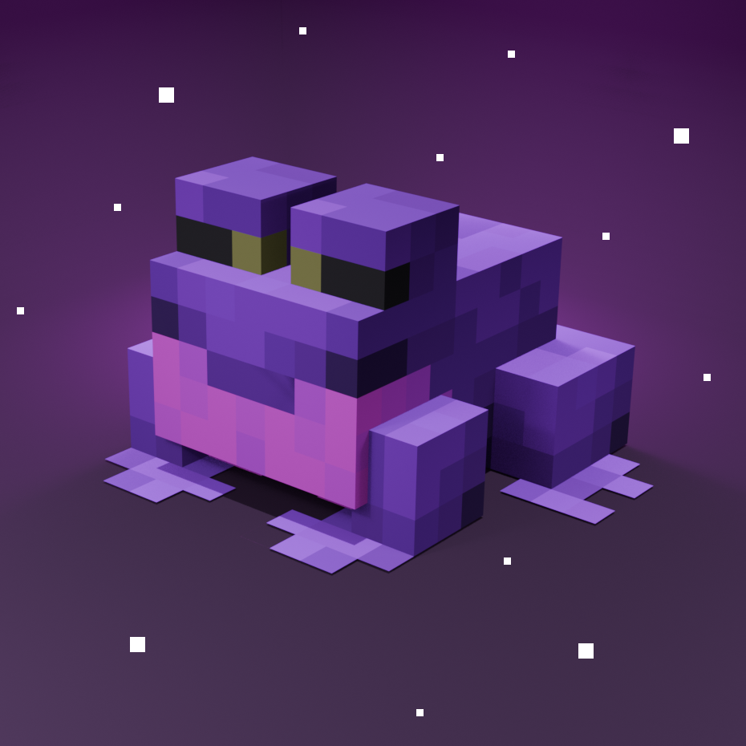

> Привет, я blackjokes!
✦ Per aspera ad astra!
Обо мне
А что обо мне? Я — дилетант широкого профиля: разбираюсь во всём, но по-немногу. Программирование, дизайн, SMM, писательство.
Всё могу, во всём не спец.
Стек
- Python
✦ Per aspera ad astra!
А что обо мне? Я — дилетант широкого профиля: разбираюсь во всём, но по-немногу. Программирование, дизайн, SMM, писательство.
Всё могу, во всём не спец.

Minecraft-сервер
Здесь классическое ванильное выживание сочетается с единым, продолжающимся от сезона к сезону лором. Игроки формируют историю мира: события, конфликты, открытия и постройки становятся частью общей хроники. Если вам нравится влиять на мир своим стилем игры — добро пожаловать к нам!
Minecraft-сервер
Это военно-политическая песочница, развернутая на базе нашей уникальной авторской сборки модификаций. Вы попали в живой, развивающийся мир со своей историей, шрамы которой тянутся из далекого прошлого.

Discord-сообщество
Ламповый сервер для общения, поиска тиммейтов, обсуждения кода, музыки, аниме и просто хорошего времяпрепровождения. Simplicitas est fortitudo.

Discord-бот / Статистика
Легендарный Discord-бот для сбора сессионной статистики игроков WoT & Tanks Blitz, пришедший на замену умершему Aftermath. В 2023–2024 годах проект прочно удерживал лидерство в нише. Закрыт из-за дороговизны содержания и регулярных сбоев на стороне игрового API.